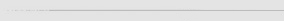

La música de Xenogears la compuso Yasunori Mitsuda, que ya trabajo con títulos de Super Famicom como Chrono Trigger. La OST fue distribuida en Japón, en dos discos, publicado por Digicube. Hay dos temas vocales en la OST y ambos son de Joanne Hogg. El primero se titula "Stars of Tears" y es similar al tema principal del juego, "Emotions". Este tema no suena durante el juego. El Segundo tema vocal se titular "Small Two of Pieces". Este tema suena en los créditos al finalizar el juego.
Se publicó otro disco de música llamado Creid. Contiene 10 temas, y varias versiones de "Stars of Tears" y “Small Two of Pieces". El resto son como las originales, pero con influencias celtas.

| Allgame | 4 de 5 |
| Edge | 8 de 10 |
| Game Revolution | B+ |
| GameSpot | 9.0 de 10 |
| IGN | 9.5 de 10 |